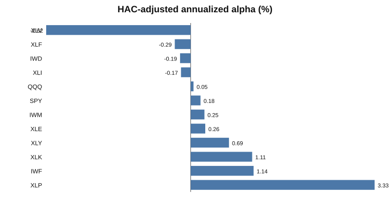
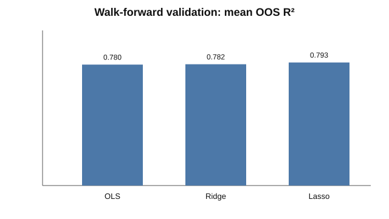
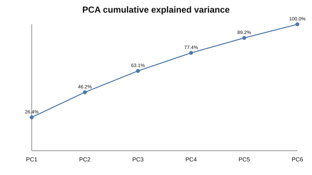
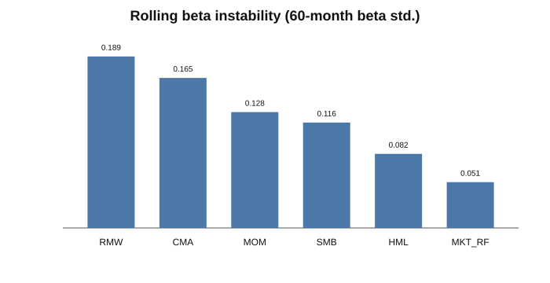

Offline deterministic validation fixture. Regenerate with --mode live for empirical market results.




Validation: 300 monthly observations, 12 ETFs, 3/3 tests passed. Mean OOS R²: OLS 0.780, Ridge 0.782, Lasso 0.793.